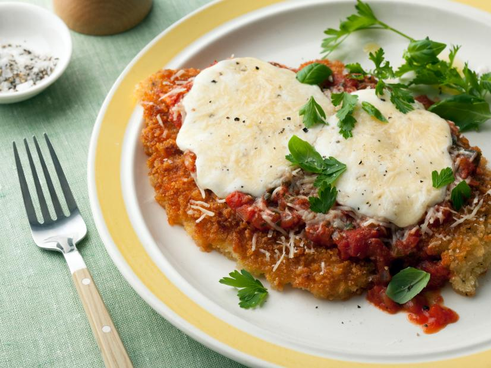

Chicken Parmigiana

Recipe Description
This recipe for cooking this chicken parmigiana dish was found from the Food Network's
website. The recipe is provided is courtesy of world famous chef, Bobby Flay.
It is an intermidiate level dish that is capable of serving four people. The
entire time to make this dish is 1 hour and 15 minutes with 30 minutes of prep
and 45 minutes of cooking.
Ingredients
- 4 skinless chicken breasts
- Salt
- Black pepper
- 2 cups of flour
- 4 eggs
- 2 cups of bread crumbs
- 1 cup vegetable oil
- Tomato sauce
- 1 pound frsh mozzarella
- 1/4 cup grated parmesan
- Fresh basil or parsley leaves
Steps
- Preheat oven to 400 degrees F.
- Season both sides of the chicken with salt and pepper. Dredge the chiken breasts
in flour and tap off the excess. Place the breasts in the eggs and dredge both
sides in bread crumbs.
- Oil saute pans over high heat and place the chicken breasts and cook until golden
brown on both sides.
- Transfer the chicken breasts to a baking sheet and top each one with tomato sauce,
slices of mozzarella, salt and pepper, and parmesan.
- Bake in the oven about 5 to 7 minutes.
- Remove the chicken from the oven and garnish with either basil or parsley leaves